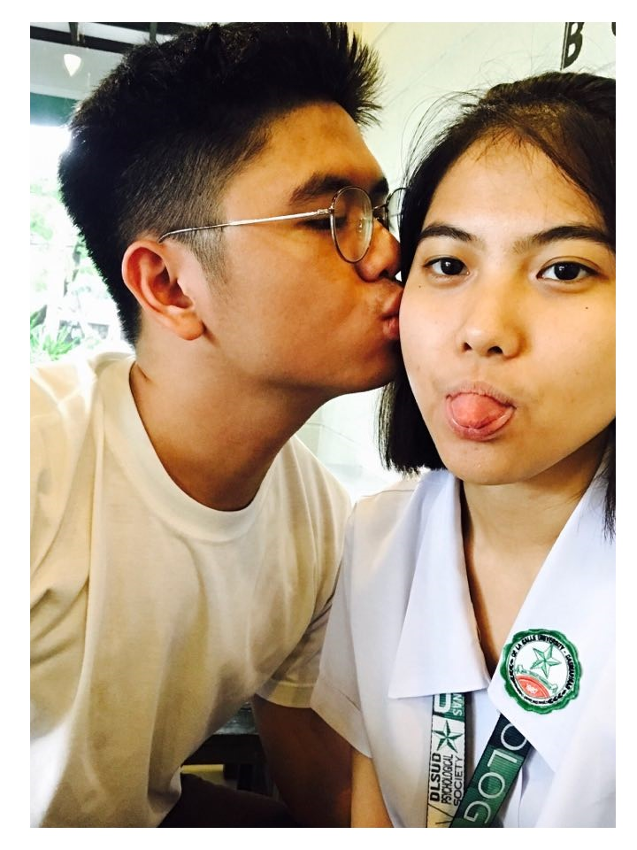

Pamella Reyes
Although I'm fond of various practices such as writing poems, debating, and exterior and interior designs, I've developed such high regards for this web page that I've decided to only
include interests that have affected my life in a colosally larger scale. Well, to start with - allow me to introduce my girlfriend: Pamella Lois G. Reyes. I've met my girlfriend three years ago in an introduction class in DLSU-D. She was a student from block BSY12; as to where, I
was a student of BSY14. Our block did not have a proper facilitator during the time-being. To assure that every student receives an introductory class in the said university, we were merged in different classes.
God is good all the time! Me being placed in my Girlfriend's block is a testament to this claim.
As a 16-year-old boy coming from a school exclusive for boys, I was pretty awkward during the time. I literally spent two days of the introduction class without talking to her. I feared that I might do something peculiar
that'd brush her off. So I maintained my composure, and adored her from a bird's eyeview. Before the introduction classes ended, I've decided to memorize every single detail of her face so that I could find her once the proper classes start.
Fortunately, I found her; but thing is, I still couldn't talk to her. There's something about her eyes that I find mesmerizing. Everything she did was amazing;
from the way folded the sleeves of her NASA shirt, to the way her eyes rolled whenever meeting mine. To be honest with you, I never really did ask her name formally.
I demonstrated persistence, however, in browsing the members of the group: "DLSU-D Froshies A.Y 2015 - 2016" with hopes of knowing her name; I triumphed in the face of diversity.
I remember having to message her in Facebook with "Hey" . Yeah, it does sound extremely cool - but believe me, I was in the brink of losing my mind to nervousness.
She did reply, although in an uninterested tone; I recognized the discomfort so I had to end it by saying "See you around the hall!" . I thought I was cool during the time-being; but everytime I'm
reminded of what I said, the cringe just won't go away!
Our relationship started when I went to the comfort room in the middle of a lecture of our 10:00 AM to 11:30 AM General Psychology class.
With slight pain in my bladder, to my surprise, we crossed path. I knew what was going to happen; the same thing that we always do: nod, smile, and pass each other as if we're friends.
But I wanted to become more than that. With all of the strength that I could muster from the past 4 years that I've spent without women, I said: "Lunch tayo mamaya?"
I know, right? What dawned onto me? I didn't even bother to say hello, or even good morning! But to my surprise she said "Okay". She literally said okay.
This coming November marks our third year as a couple. Although a lot of obstacles lie within our path, I'm determined to smash them all - if a life with her is the primary reward.
She is my aphrodite, my wonderwall, and my partner in crime - and no other person can change that!
Music
Music has always been the interest of our extended family members. My mother used to sing in operas back when she was in college; whereas, my dad used to be a bassist of a band who often played in bars.
Of course, it wouldn't be quite surprising if I were to say: My brother and I are also into music. Upon clicking the image above, you will be directed to a music streaming platform named 'Soundcloud' containing my brother and I's cover of a song entitled A song about being sad by
Rex Orange County. I used to play in different gigs as well, as a vocalist of a band; that was all before I decided to leave. I knew that my voice isn't for 'rock and roll' - acoustic or psychedelic indie would suit it best; i'd tell you that. I'm currently making music alone, and to be honest, it isn't easy.
I often struggle in my inadequacies as an instrumentalist. For my case, the primary struggle in song construction lies not in infusing your feelings through writing - I'd like to think that articulation is my forte.
The primary struggle lies in matching the musical ambiance that you've conceptualize, in the musical ambiance that you wanted to produce with your hands. The usual case in constructing songs is that people romanticize their flaws by saying: "Ah sige ito nalang, mukhang mas maganda 'to eh." And make no mistake, I have nothing against that practice.
It's just that I'm quite persistent with what I want, that I'm willing to set aside convenience for the things I truly desire. Apart from the struggles of solo-music construction, the practice also has its benefits. Among all of which, the freedom to follow your own chord progression is my utmost favorite.
When I was in a band, the musical tones that I've conceptualized usually receive little attention, and are oftentimes rejected. "Masyadong mellow, pare. Hindi pwede." is a perfect example of how people usually react to my desired chord progression. Now that I'm working alone, approval from other people so that I can materialize my craft is the least of my concern.
Although the practice is of difficulty, nothing comes close to the happiness that I feel in being able to construct music the way I wanted to.